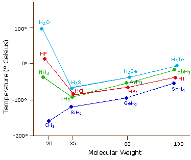
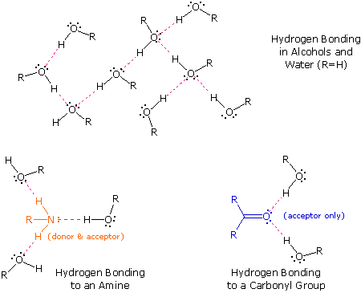
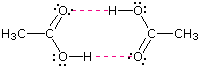
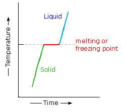
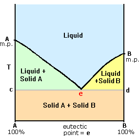
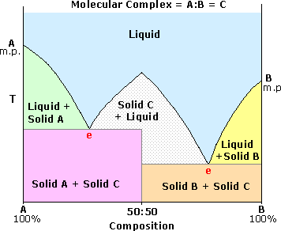
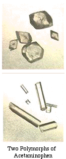
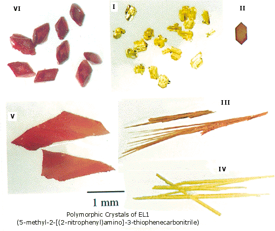
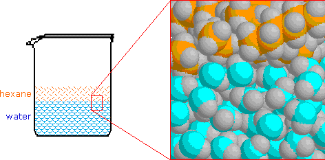
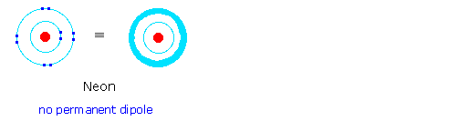

The molecule is the smallest observable group of uniquely bonded atoms that represent the composition, configuration and characteristics of a pure compound. Our chief focus up to this point has been to discover and describe the ways in which atoms bond together to form molecules. Since all observable samples of compounds and mixtures contain a very large number of molecules (ca.!020), we must also concern ourselves with interactions between molecules, as well as with their individual structures. Indeed, many of the physical characteristics of compounds that are used to identify them (e.g. boiling points, melting points and solubilities) are due to intermolecular interactions. All atoms and molecules have a weak attraction for one another, known as van der Waals attraction. This attractive force has its origin in the electrostatic attraction of the electrons of one molecule or atom for the nuclei of another. If there were no van der Waals forces, all matter would exist in a gaseous state, and life as we know it would not be possible. It should be noted that there are also smaller repulsive forces between molecules that increase rapidly at very small intermolecular distances.
For general purposes it is useful to consider temperature to be a measure of the kinetic energy of all the atoms and molecules in a given system. As temperature is increased, there is a corresponding increase in the vigor of translational and rotation motions of all molecules, as well as the vibrations of atoms and groups of atoms within molecules. Experience shows that many compounds exist normally as liquids and solids; and that even low-density gases, such as hydrogen and helium, can be liquified at sufficiently low temperature and high pressure. A clear conclusion to be drawn from this fact is that intermolecular attractive forces vary considerably, and that the boiling point of a compound is a measure of the strength of these forces. Thus, in order to break the intermolecular attractions that hold the molecules of a compound in the condensed liquid state, it is necessary to increase their kinetic energy by raising the sample temperature to the characteristic boiling point of the compound.
The following table illustrates some of the factors that influence the strength of intermolecular attractions. The formula of each entry is followed by its formula weight in parentheses and the boiling point in degrees Celsius. First there is molecular size. Large molecules have more electrons and nuclei that create van der Waals attractive forces, so their compounds usually have higher boiling points than similar compounds made up of smaller molecules. It is very important to apply this rule only to like compounds. The examples given in the first two rows are similar in that the molecules or atoms are spherical in shape and do not have permanent dipoles. Molecular shape is also important, as the second group of compounds illustrate. The upper row consists of roughly spherical molecules, whereas the isomers in the lower row have cylindrical or linear shaped molecules. The attractive forces between the latter group are generally greater. Finally, permanent molecular dipoles generated by polar covalent bonds result in even greater attractive forces between molecules, provided they have the mobility to line up in appropriate orientations. The last entries in the table compare non-polar hydrocarbons with equal-sized compounds having polar bonds to oxygen and nitrogen. Halogens also form polar bonds to carbon, but they also increase the molecular mass, making it difficult to distinguish among these factors.
Increasing Size
Molecular Shape
Molecular Polarity
The melting points of crystalline solids cannot be categorized in as simple a fashion as boiling points. The distance between molecules in a crystal lattice is small and regular, with intermolecular forces serving to constrain the motion of the molecules more severely than in the liquid state. Molecular size is important, but shape is also critical, since individual molecules need to fit together cooperatively for the attractive lattice forces to be large. Spherically shaped molecules generally have relatively high melting points, which in some cases approach the boiling point. This reflects the fact that spheres can pack together more closely than other shapes. This structure or shape sensitivity is one of the reasons that melting points are widely used to identify specific compounds. The data in the following table serves to illustrate these points.
Notice that the boiling points of the unbranched alkanes (pentane through decane) increase rather smoothly with molecular weight, but the melting points of the even-carbon chains increase more than those of the odd-carbon chains. Even-membered chains pack together in a uniform fashion more compactly than do odd-membered chains. The last compound, an isomer of octane, is nearly spherical and has an exceptionally high melting point (only 6º below the boiling point).
The most powerful intermolecular force influencing neutral (uncharged) molecules is the hydrogen bond. If we compare the boiling points of methane (CH4) -161ºC, ammonia (NH3) -33ºC, water (H2O) 100ºC and hydrogen fluoride (HF) 19ºC, we see a greater variation for these similar sized molecules than expected from the data presented above for polar compounds. This is shown graphically in the following chart. Most of the simple hydrides of group IV, V, VI & VII elements display the expected rise in boiling point with molecular mass, but the hydrides of the most electronegative elements (nitrogen, oxygen and fluorine) have abnormally high boiling points for their mass.

The exceptionally strong dipole-dipole attractions that cause this behavior are called the hydrogen bond. Hydrogen forms polar covalent bonds to more electronegative atoms such as oxygen, and because a hydrogen atom is quite small, the positive end of the bond dipole (the hydrogen) can approach neighboring nucleophilic or basic sites more closely than can other polar bonds. Coulombic forces are inversely proportional to the sixth power of the distance between dipoles, making these interactions relatively strong, although they are still weak (ca. 4 to 5 kcal per mole) compared with most covalent bonds. The unique properties of water are largely due to the strong hydrogen bonding that occurs between its molecules. In the following diagram the hydrogen bonds are depicted as magenta dashed lines.

The molecule providing a polar hydrogen for a hydrogen bond is called a donor. The molecule that provides the electron rich site to which the hydrogen is attracted is called an acceptor. Water and alcohols may serve as both donors and acceptors, whereas ethers, aldehydes, ketones and esters can function only as acceptors. Similarly, primary and secondary amines are both donors and acceptors, but tertiary amines function only as acceptors. Once you are able to recognize compounds that can exhibit intermolecular hydrogen bonding, the relatively high boiling points they exhibit become understandable. The data in the following table serve to illustrate this point.
Alcohols boil considerably higher than comparably sized ethers (first two entries), and isomeric 1º, 2º & 3º-amines, respectively, show decreasing boiling points, with the two hydrogen bonding isomers being substantially higher boiling than the 3º-amine (entries 5 to 7). Also, O–H---O hydrogen bonds are clearly stronger than N–H---N hydrogen bonds, as we see by comparing propanol with the amines.

A related principle is worth noting at this point. Although the hydrogen bond is relatively weak (ca. 4 to 5 kcal per mole), when several such bonds exist the resulting structure can be quite robust. The hydrogen bonds between cellulose fibers confer great strength to wood and related materials.
Most organic compounds have melting points below 200 ºC. Some decompose before melting, a few sublime, but a majority undergo repeated melting and crystallization without any change in molecular structure. When a pure crystalline compound is heated, or a liquid cooled, the change in sample temperature with time is roughly uniform. However, if the solid melts, or the liquid freezes, a discontinuity occurs and the temperature of the sample remains constant until the phase change is complete. This behavior is shown in the diagram on the right, with the green segment representing the solid phase, light blue the liquid, and red the temperature invariant liquid/solid equilibrium. For a given compound, this temperature represents its melting point (or freezing point), and is a reproducible constant as long as the external pressure does not change. The length of the horizontal portion depends on the size of the sample, since a quantity of heat proportional to the heat of fusion must be added (or removed) before the phase change is complete.
Now it is well known that the freezing point of a solvent is lowered by a dissolved solute, e.g. brine compared with water. If two crystalline compounds (A & B) are thoroughly mixed, the melting point of that mixture is normally depressed and broadened, relative to the characteristic sharp melting point of each pure component. This provides a useful means for establishing the identity or non-identity of two or more compounds, since the melting points of numerous solid organic compounds are documented and commonly used as a test of purity. The phase diagram on the right shows the melting point behavior of mixtures ranging from pure A on the left to pure B on the right. A small amount of compound B in a sample of compound A lowers (and broadens) its melting point; and the same is true for a sample of B containing a little A. The lowest mixture melting point, e, is called the eutectic point. For example, if A is cinnamic acid, m.p. 137 ºC, and B is benzoic acid, m.p. 122 ºC, the eutectic point is 82 ºC. Below the temperature of the isothermal line ced, the mixture is entirely solid, consisting of a conglomerate of solid A and solid B. Above this temperature the mixture is either a liquid or a liquid solid mixture, the composition of which varies. In some rare cases of nonpolar compounds of similar size and crystal structure, a true solid solution of one in the other, rather than a conglomerate, is formed. Melting or freezing takes place over a broad temperature range and there is no true eutectic point.


An interesting but less common mixed system involves molecular components that form a tight complex or molecular compound, capable of existing as a discrete species in equilibrium with a liquid of the same composition. Such a species usually has a sharp congruent melting point and produces a phase diagram having the appearance of two adjacent eutectic diagrams. An example of such a system is shown on the right, the molecular compound being represented as A:B or C. One such mixture consists of α-naphthol, m.p. 94 ºC, and p-toluidine, m.p. 43 ºC. The A:B complex has a melting point of 54 ºC, and the phase diagram displays two eutectic points, the first at 50 ºC, the second at 30 ºC. Molecular complexes of this kind commonly have a 50:50 stoichiometry, as shown, but other integral ratios are known. In addition to the potential complications noted above, the simple process of taking a melting point may also be influenced by changes in crystal structure, either before or after an initial melt. The existence of more than one crystal form for a given compound is called polymorphism.

Polymorphs of a compound are different crystal forms in which the lattice arrangement of molecules are dissimilar. These distinct solids usually have different melting points, solubilities, densities and optical properties. Many polymorphic compounds have flexible molecules that may assume different conformations, and X-ray examination of these solids shows that their crystal lattices impose certain conformational constraints. When melted or in solution, different polymorphic crystals of this kind produce the same rapidly equilibrating mixture of molecular species. Polymorphism is similar to, but distinct from, hydrated or solvated crystalline forms. It has been estimated that over 50% of known organic compounds may be capable of polymorphism.
The ribofuranose tetraacetate, shown at the upper left below, was the source of an early puzzle involving polymorphism. The compound was first prepared in England in 1946, and had a melting point of 58 ºC. Several years later the same material, having the same melting point, was prepared independently in Germany and the United States. The American chemists then found that the melting points of their early preparations had risen to 85 ºC. Eventually, it became apparent that any laboratory into which the higher melting form had been introduced was no longer able to make the lower melting form. Microscopic seeds of the stable polymorph in the environment inevitably directed crystallization to that end. X-ray diffraction data showed the lower melting polymorph to be monoclinic, space group P2. The higher melting form was orthorhombic, space group P212121. Polymorphism has proven to be a critical factor in pharmaceuticals, solid state pigments and polymer manufacture. Some examples are described below.

Acetaminophen is a common analgesic (e.g. Tylenol). It is usually obtained as monoclinic prisms (upper picture) on crystallization from water. A less stable orthorhombic polymorph, having better physical properties for pressing into tablets, is shown beneath the first.
Quinacridone is an important pigment used in paints and inks. It has a rigid flat molecular structure, and in dilute solution has a light yellow color. Three polymorphs have been identified. Intermolecular hydrogen bonds are an important feature in all off these. The crystal colors range from bright red to violet.
The anti-ulcer drug ranitidine (Zantac) was first patented by Glaxo-Wellcome in 1978. Seven years later a second polymorph of ranitidine was patented by the same company. This extended the licensing coverage until 2002, and efforts to market a generic form were thwarted, because it was not possible to prepare the first polymorph uncontaminated by the second.
The relatively simple aryl thiophene, designated EL1, was prepared and studied by chemists at the Eli Lilly Company. It displayed six polymorphic crystal forms, pictures of which are shown on the left.

A common example of changes in polymorphism is shown by chocolate that has suffered heating and/or long storage. Over time, or when it resets after softening, it may have white patches on it, no longer melts in your mouth, and doesn't taste as good as it should. This is because chocolate has more than six polymorphs, and only one is ideal as a confection. It is created under carefully-controlled factory conditions. Improper storage or transport conditions cause chocolate to transform into other polymorphs. Chocolate is in essence cocoa mass and sugar particles suspended in a cocoa butter matrix. Cocoa butter is a mixture of triglycerides in which stearoyl, oleoyl and palmitoyl groups predominate. It is the polymorphs of this matrix that influence the quality of chocolate. Low melting polymorphs feel too sticky or thick in the mouth. Form V, the best tasting polymorph of cocoa butter, has a melting point of 34 to 36 ºC, slightly less than the interior of the human body, which is one reason it melts in the mouth. Unfortunately, the higher melting form VI is more stable and is produced over time.
Water has been referred to as the "universal solvent", and its widespread distribution on this planet and essential role in life make it the benchmark for discussions of solubility. Water dissolves many ionic salts thanks to its high dielectric constant and ability to solvate ions. The former reduces the attraction between oppositely charged ions and the latter stabilizes the ions by binding to them and delocalizing charge density. Many organic compounds, especially alkanes and other hydrocarbons, are nearly insoluble in water. Organic compounds that are water soluble, such as most of those listed in the above table, generally have hydrogen bond acceptor and donor groups. The least soluble of the listed compounds is diethyl ether, which can serve only as a hydrogen bond acceptor and is 75% hydrocarbon in nature. Even so, diethyl ether is about two hundred times more soluble in water than is pentane.
The chief characteristic of water that influences these solubilities is the extensive hydrogen bonded association of its molecules with each other. This hydrogen bonded network is stabilized by the sum of all the hydrogen bond energies, and if nonpolar molecules such as hexane were inserted into the network they would destroy local structure without contributing any hydrogen bonds of their own. Of course, hexane molecules experience significant van der Waals attraction to neighboring molecules, but these attractive forces are much weaker than the hydrogen bond. Consequently, when hexane or other nonpolar compounds are mixed with water, the strong association forces of the water network exclude the nonpolar molecules, which must then exist in a separate phase. This is shown in the following illustration, and since hexane is less dense than water, the hexane phase floats on the water phase.

It is important to remember this tendency of water to exclude nonpolar molecules and groups, since it is a factor in the structure and behavior of many complex molecular systems. A common nomenclature used to describe molecules and regions within molecules is hydrophilic for polar, hydrogen bonding moieties and hydrophobic for nonpolar species.
This page is the property of The Edvibe Team. Comments, questions and errors should be sent to contact@edvibe.co.ke. These pages are provided to the IOCD to assist in capacity building in chemical education. 05/05/2013
The attractive forces that exist between molecules are responsible for many of the bulk physical properties exhibited by substances. Some compounds are gases, some are liquids, and others are solids. The melting and boiling points of pure substances reflect these intermolecular forces, and are commonly used for identification. Of these two, the boiling point is considered the most representative measure of general intermolecular attractions. Thus, a melting point reflects the thermal energy needed to convert the highly ordered array of molecules in a crystal lattice to the randomness of a liquid. The distance between molecules in a crystal lattice is small and regular, with intermolecular forces serving to constrain the motion of the molecules more severely than in the liquid state. Molecular size is important, but shape is also critical, since individual molecules need to fit together cooperatively for the attractive lattice forces to be large. Spherically shaped molecules generally have relatively high melting points, which in some cases approach the boiling point, reflecting the fact that spheres can pack together more closely than other shapes. This structure or shape sensitivity is one of the reasons that melting points are widely used to identify specific compounds. Boiling points, on the other hand, essentially reflect the kinetic energy needed to release a molecule from the cooperative attractions of the liquid state so that it becomes an unencumbered and relative independent gaseous state species. All atoms and molecules have a weak attraction for one another, known as van der Waals attraction. This attractive force has its origin in the electrostatic attraction of the electrons of one molecule or atom for the nuclei of another, and has been called London dispersion force. The following animation illustrates how close approach of two neon atoms may perturb their electron distributions in a manner that induces dipole attraction. The induced dipoles are transient, but are sufficient to permit liquefaction of neon at low temperature and high pressure.

In general, larger molecules have higher boiling points than smaller molecules of the same kind, indicating that dispersion forces increase with mass, number of electrons, number of atoms or some combination thereof. The following table lists the boiling points of an assortment of elements and covalent compounds composed of molecules lacking a permanent dipole. The number of electrons in each species is noted in the first column, and the mass of each is given as a superscript number preceding the formula.
Two ten electron molecules are shown in the first row. Neon is heavier than methane, but it boils 84º lower. Methane is composed of five atoms, and the additional nuclei may provide greater opportunity for induced dipole formation as other molecules approach. The ease with which the electrons of a molecule, atom or ion are displaced by a neighboring charge is called polarizability, so we may conclude that methane is more polarizable than neon. In the second row, four eighteen electron molecules are listed. Most of their boiling points are higher than the ten electron compounds neon and methane, but fluorine is an exception, boiling 25º below methane. The remaining examples in the table conform to the correlation of boiling point with total electrons and number of nuclei, but fluorine containing molecules remain an exception. The anomalous behavior of fluorine may be attributed to its very high electronegativity. The fluorine nucleus exerts such a strong attraction for its electrons that they are much less polarizable than the electrons of most other atoms.
Of course, boiling point relationships may be dominated by even stronger attractive forces, such as those involving electrostatic attraction between oppositely charged ionic species, and between the partial charge separations of molecular dipoles. Molecules having a permanent dipole moment should therefore have higher boiling points than equivalent nonpolar compounds, as illustrated by the data in the following table.
In the first row of compounds, ethane, ethene and ethyne have no molecular dipole, and serve as useful references for single, double and triple bonded derivatives that do. Formaldehyde and hydrogen cyanide clearly show the enhanced intermolecular attraction resulting from a permanent dipole. Methyl fluoride is anomalous, as are most organofluorine compounds. In the second and third rows, all the compounds have permanent dipoles, but those associated with the hydrocarbons (first two compounds in each case) are very small. Large molecular dipoles come chiefly from bonds to high-electronegative atoms (relative to carbon and hydrogen), especially if they are double or triple bonds. Thus, aldehydes, ketones and nitriles tend to be higher boiling than equivalently sized hydrocarbons and alkyl halides. The atypical behavior of fluorine compounds is unexpected in view of the large electronegativity difference between carbon and fluorine.
Most of the simple hydrides of group IV, V, VI & VII elements display the expected rise in boiling point with number of electrons and molecular mass, but the hydrides of the most electronegative elements (nitrogen, oxygen and fluorine) have abnormally high boiling points, depicted earlier as a graph, and also listed on the right.
Water is the single most abundant and important liquid on this planet. The miscibility of other liquids in water, and the solubility of solids in water, must be considered when isolating and purifying compounds. To this end, the following table lists the water miscibility (or solubility) of an assortment of low molecular weight organic compounds. The influence of the important hydrogen bonding atoms, oxygen and nitrogen is immediately apparent. The first row lists a few hydrocarbon and chlorinated solvents. Without exception these are all immiscible with water, although it is interesting to note that the π-electrons of benzene and the nonbonding valence electrons of chlorine act to slightly increase their solubility relative to the saturated hydrocarbons. When compared with hydrocarbons, the oxygen and nitrogen compounds listed in the second, third and fourth rows are over a hundred times more soluble in water, and many are completely miscible with water.
Some general trends are worth noting from the data above. First, alcohols (second row left column) are usually more soluble than equivalently sized ethers (second row right column). This reflects the fact that the hydroxyl group may function as both a hydrogen bond donor and acceptor; whereas, an ether oxygen may serve only as an acceptor. The increased solubility of phenol relative to cyclohexanol may be due to its greater acidity as well as the pi-electron effect noted in the first row. The cyclic ether THF (tetrahydrofuran) is more soluble than its open chain analog, possibly because the oxygen atom is more accessible for hydrogen bonding to water molecules. Due to the decreased basicity of the oxygen in the aromatic compound furan, it is much less soluble. The oxygen atom in anisole is likewise deactivated by conjugation with the benzene ring (note, it activates the ring in electrophilic substitution reactions). A second oxygen atom dramatically increases water solubility, as demonstrated by the compounds listed in the third row. Again hydroxyl compounds are listed on the left. Nitrogen exerts a solubilizing influence similar to oxygen, as shown by the compounds in the fourth row. The primary and secondary amines listed in the left hand column may function as both hydrogen bond donors and acceptors. Aromaticity decreases the basicity of pyrrole, but increases its acidity. The compounds in the right column are only capable of an acceptor role. The low solubility of the nitro compound is surprising.